|
|
|
Diadema
sea urchin
Diadema setosum
Family Diadematidae
updated
Mar 2020
Where
seen? This
large, very scary-looking sea urchin is among our most commonly encountered
sea urchins in deeper waters. It is said to be found in large groups
where there is a lot of dead coral. It is believed that these gather
together in groups where there are insufficient hiding places from
daytime predators. It is also sometimes encountered on the intertidal
on our Northern and Southern shores, usually alone, wedged in coral
rubble or near large boulders. On Cyrene Reef, they may also be found
among seagrasses.
Features: Body diameter 8-10cm. It has very long
primary spines, up to 30cm long, with many shorter spines in between.
The spines on the underside are much shorter. The urchin can rapidly
point its long spines against any potential threat (which is quite
a scary thing to observe). The spines may be all black, banded black-and-white
or even all white.
There is bulbous sac in the middle of the upperside. This is the anal
cone through which wastes are discharged. There is an orange
ring around this anal cone, sometimes the ring is pale. There are five bright white spots on the black body, with small bright blue dots forming V-shape
lines from the white spots. The underside may be pale, dark or maroon
or pink.
Painful
poke: The long,
thin spines are hollow and sharp enough to painfully pierce
through clothing and gloves. The spines often break in
the skin and are hard to remove. The pain, however, usually
goes away in a few hours.
How to stay safe: Wear covered shoes and long pants to cover all skin exposed
to water. Don't touch or pick up sea urchins. |
|
|
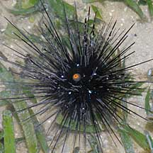
Cyrene Reef,
Jun 08 |
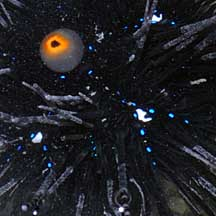
Bulbous anal
sac, five white spots
and blue dots in V-shape lines. |
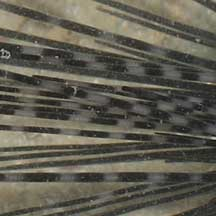
Spines may be
black, banded or even white.
|
May be confused with the Black
sea urchin (Temnopleurus sp.) with much shorter spines
is more commonly seen on our Northern shores, sometimes in large numbers. Thanks to Dr Frederic Ducarme for more on how to tell apart Diadema setosum and Diadema savignyi. "The orange ring is unique to Diadema setosum, even if in some cases it can be pale, and D. savignyi can, in exceptional cases, also have a pale ring around the anal papilla. But the five white dots indicate D. setosum, as well as the blue dots pattern of the iridophores, whereas D. savignyi has lines. Indeed D. savignyi generally has a thicker body with shorter spines, but the length of the spines vary according to the site, and in some places D. setosum has shorter spines as well."
What does it eat? It feeds on
algae, grazing these from dead corals or rubble areas. It may also
trap tiny suspended food particles with its long spines, transferring
these to the mouth with tube feet.
Prickly home: The sea urchin is
sometimes home to other animals such as cardinalfish (Family Apogonidae), razorfishes (Family Centriscidae) and shrimps (Saron marmoratus) and anemones
(Coeloplana sp.). Small white parasitic snails are also said
to be associated with it.
Human uses: In some places, the
roe of this sea urchin is eaten resulting in heavy harversting. |
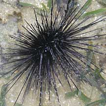
Sideview with shorter spines on the underside
and longer spines on the upperside.
Cyrene Reef, Jun 08 |
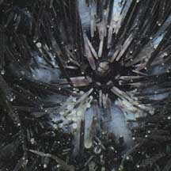
Short flat spines
around the mouth. |
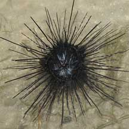
Cyrene Reef, May 08
|
| Diadema black sea urchins on Singapore shores |
| Other sightings on Singapore shores |
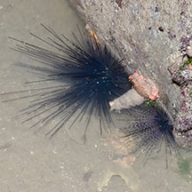
Changi, May 17
Photo
shared by Loh Kok Sheng on facebook. |
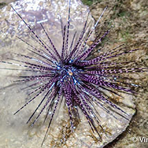
Changi, Aug 20
Photo shared by Vincent Choo on facebook. |
|
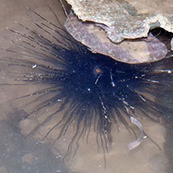
East Coast PCN, Jul 20
Photo shared by Loh Kok Sheng on facebook. |
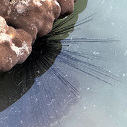
East Coast PCN, Jul 25
Photo shared by Adriane Lee on facebook. |
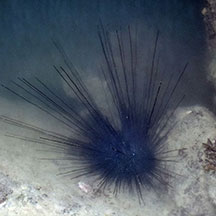
East Coast Park, Jul 20
Photo shared by Loh Kok Sheng on facebook. |
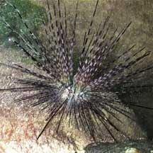
Tanah Merah, Jul 09
Photo
shared by Toh Chay Hoon on her
blog. |
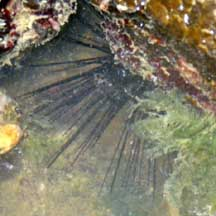
Tanah Merah, Aug 09
Photo shared by Loh Kok Sheng on his blog. |
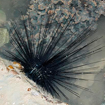
Tanah Merah, May 14
Photo shared by Loh Kok Sheng on his blog. |
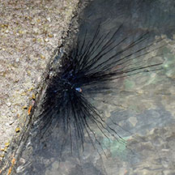
Sentosa Tg Rimau, Aug 20
Photo shared by Loh Kok Sheng on facebook. |
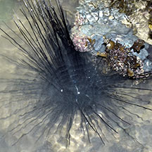
Sentosa Tg Rimau, Oct 25
Photo shared by Loh Kok Sheng on facebook |
|
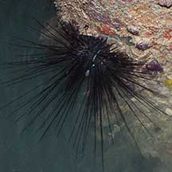
Kusu Island, May 22
Photo shared by Marcus Ng on facebook. |
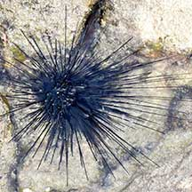
Lazarus Island, Nov 20
Photo
shared by Loh Kok Sheng on facebook. |
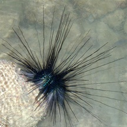
Seringat
Kias, Apr 12
Photo shared by Loh Kok Sheng on his
blog. |
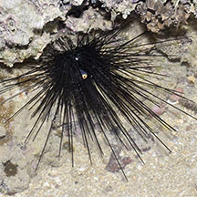
Pulau Tekukor, Jun 16
Photo
shared by Loh Kok Sheng on facebook. |
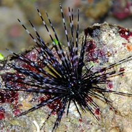
Terumbu Selegie, Jun 11
Photo shared by Jerome Pang on facebook. |
|
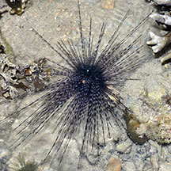
Big Sisters Island, Sep 20
Photo
shared by Loh Kok Sheng on facebook. |
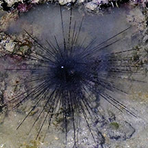
Big Sisters, Aug 25
Shared by Adriane Lee on facebook. |
|
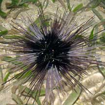
Cyrene Reef,
Nov 09
Photo shared by Geraldine Lee on her
blog. |
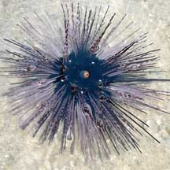
Cyrene Reef,
Nov 08
Photo shared by Loh Kok Sheng on his
blog. |
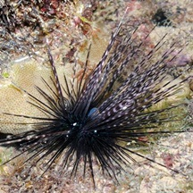
Pulau Jong, Jun 12
Photo shared by Loh Kok Sheng on his
blog. |
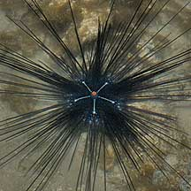
Pulau Hantu,
Jun 10
Photo shared by James Koh on his
blog. |
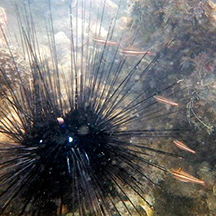
Terumbu
Hantu, Jun 13
Photo shared by Loh Kok Sheng on his blog. |
|
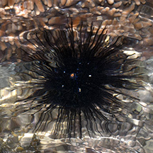
Pulau Semakau East, Jul 15
Photo shared by Loh Kok Sheng on facebook. |
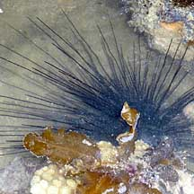
Terumbu
Semakau, May 10
Photo shared by Loh Kok Sheng on his flickr. |
|
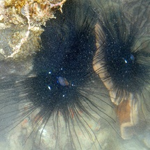
Terumbu Bemban,
Apr 11
Photo shared by Loh Kok Sheng on his
blog. |
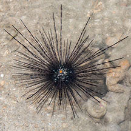
Beting Bemban Besar,
Mar 20
Photo shared by Marcus Ng on facebook. |
|
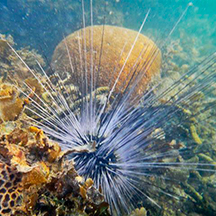
Terumbu
Pempang Tengah, Jul 12
Photo shared by Loh Kok Sheng on his blog. |
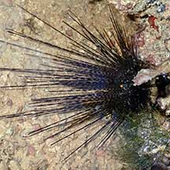
Terumbu
Pempang Tengah, May 21
Photo shared by Toh Chay Hoon on facebook. |
|
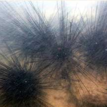
Pulau Biola, Jan 22
Photo shared by Loh Kok Sheng on facebook. |
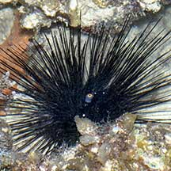
Pulau Salu, Apr 21
Photo shared by Loh Kok Sheng on facebook. |
|
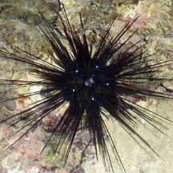
Pulau Senang, Jun 10
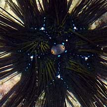
Photo shared by Loh Kok Sheng on his
flickr. |
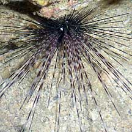
Pulau Senang, Jun 10
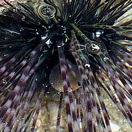
Photo shared by Loh Kok Sheng on his
flickr. |
|
Diadema
species recorded for Singapore
from Wee
Y.C. and Peter K. L. Ng. 1994. A First Look at Biodiversity in
Singapore.
*additions from Lane, David J.W. and Didier Vandenspiegel. 2003. A
Guide to Sea Stars and Other Echinderms of Singapore.
| |
Diadema setosum
*Diadema savignyi |
|
Acknowlegments
Thanks to Dr Frederic Ducarme for more on how to tell apart Diadema setosum and Diadema savignyi.
Links
References
- Tan Heok Hui. 4 July 014. Longspine sea urchins with commensal fish and shrimps: Zanzibar urchin shrimp, Tuleariocaris zanzibarica; Urchin clingfish, Diademichthys lineatus. Singapore Biodiversity Records 2014: 179-180
- Lane, David
J.W. and Didier Vandenspiegel. 2003. A Guide to Sea Stars and
Other Echinoderms of Singapore. Singapore Science Centre.
187pp.
- Chou, L.
M., 1998. A Guide to the Coral Reef life of Singapore.
Singapore Science Centre. 128 pages.
- Miskelly,
Ashely. 2002. Sea Urchins of Australia and the Indo-Pacific.
Capricornia Publications. 180pp.
- Schoppe,
S., 2000. Echinoderms of the Philippines. Times Edition,
Singapore. 144 pp.
- Allen, Gerald
R and Roger Steene. 2002. Indo-Pacific Coral Reef Field Guide.
Tropical Reef Research. 378pp.
- Coleman,
Neville.undated. Sea Stars of Australasia and their relatives.
Neville Coleman's World of Water, Australia.64pp.
- Gosliner,
Terrence M., David W. Behrens and Gary C. Williams. 1996. Coral
Reef Animals of the Indo-Pacific: Animal life from Africa to Hawaii
exclusive of the vertebrates. Sea Challengers. 314pp.
|
|
|